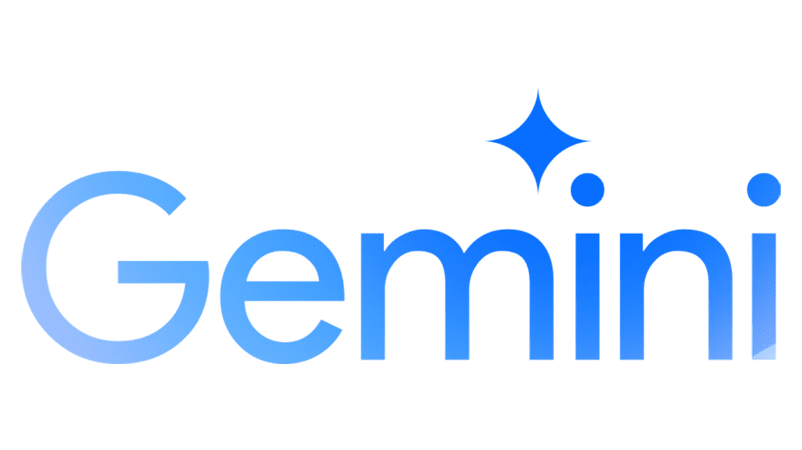

La Inteligencia Artificial está transformando el mundo a un ritmo acelerado. Cada día surgen nuevas herramientas y aplicaciones basadas en IA que facilitan nuestras vidas y revolucionan industrias enteras. Pero, ¿cuáles son las IA más populares en este momento?
(Son botones)
ChatGPT
Es un modelo de lenguaje de gran tamaño capaz de generar texto similar al humano. Puede mantener conversaciones, traducir idiomas, escribir diferentes tipos de contenido creativo, y responder a tus preguntas de manera informativa.

Midjourney
Esta herramienta se especializa en la generación de imágenes a partir de descripciones textuales. Puedes describir la imagen que quieres y Midjourney la creará para ti. Es ideal para diseñadores, artistas y cualquier persona que quiera crear imágenes únicas y personalizadas.

Gemini
Es una familia de modelos de lenguaje de gran tamaño desarrollada por Google AI. Gemini es capaz de realizar una amplia gama de tareas, incluyendo generación de texto, traducción de idiomas, escritura de código, y mucho más. Es una de las herramientas de IA más avanzadas en la actualidad.
Grammarly
Esta herramienta te ayuda a mejorar tu escritura en inglés. Corrige errores gramaticales, ortográficos y de puntuación, y te sugiere alternativas para mejorar el estilo de tu texto. Es muy útil para estudiantes, profesionales y cualquier persona que quiera comunicarse de manera efectiva en inglés.

DeepL
Es un servicio de traducción automática que utiliza la inteligencia artificial para ofrecer traducciones de alta calidad. Soporta una amplia variedad de idiomas y es conocido por su precisión y fluidez. Es una excelente opción para traducir textos largos o documentos completos.
Jasper.ai
Esta herramienta está diseñada para ayudar a las personas a crear contenido escrito de manera más rápida y eficiente. Puede generar ideas, escribir borradores y reescribir textos existentes. Es muy útil para escritores, blogueros y profesionales del marketing.
Hugging Face
Es una comunidad de desarrolladores que comparten y colaboran en proyectos de inteligencia artificial. Hugging Face es un excelente recurso para aquellos que quieren aprender más sobre el procesamiento del lenguaje natural y la IA.
Google Colaboratory
Es una plataforma gratuita de Google que te permite ejecutar código Python en la nube. Es muy útil para experimentar con modelos de aprendizaje automático y realizar análisis de datos.